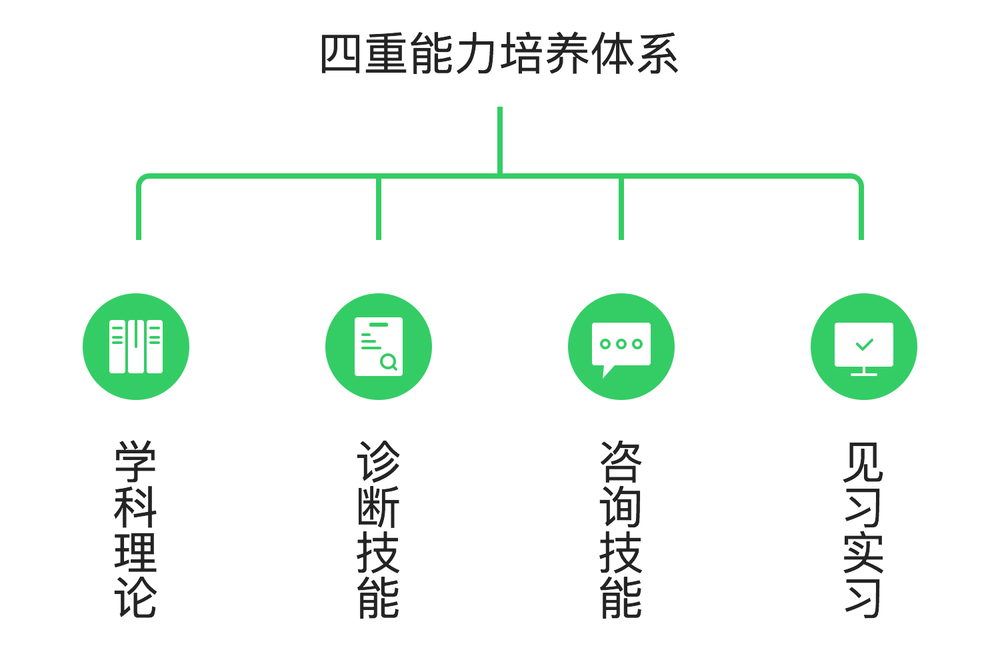

壹点灵大学心理咨询师强势来袭
 立即咨询相关问题
报考壹点灵大学心理咨询师的条件？
1. 想成为心理咨询师，亦欲从事心理咨询师行业者。2. 以获得国家心理咨询师证书，实践操作经验缺乏者。3. 对心理学感兴趣，想提升自己生活、工作的心理学爱好者。4. 企事业单位人力资源管理者。
成为壹点灵大学心理咨询师后，我的成长方向会是怎样的？
1. 入驻壹点灵平台
咨询顾问 > 中级咨询师 > 高级咨询师2. 入驻壹点灵
A. 销售专员 > 主管 > 经理 > 总监 > 事业部总经理；B. 销售专员 > 高级专员 > 资深专员 > VIP服务专家壹点灵大学心理咨询师授课及报考的形式和时间是怎样的？
2. 考试时间及形式：在线修满学分后即可申请考核，每两个月进行一次考核认证。
授课大咖云集

杨发辉
北京师范大学博士、副教授、壹点灵顾问督导、ACT认知行为心理治疗师、认证督导师、22部委文件起草人之一

朱浩亮
副教授、中央财经大学硕士生导师、壹点灵顾问督导、国家心理咨询师高级考评员、中科院心理所督导专家

祝卓宏
中科院心理研究所博士、教授、博士后导师、壹点灵顾问督导、中国心理卫生协会心理师专委会副主任委员

姜长青
北京安定医院主任医师、心理科主任、壹点灵顾问督导、中国心理卫生协会心理咨询师专业委员会主任

郑日昌
北京师范大学教授、博导、壹点灵顾问督导、卫生部心理治疗师考试专委会委员、教育部考试中心研究员

马建青
浙江大学博士、教授、博士生导师、壹点灵顾问督导、求是特聘学者、心理卫生协会心理师专委会副主任委员

史占彪
中科院心理所博士、教授、壹点灵首席专家顾问、壹点灵顾问督导、中科院心理所心理健康促进中心主任

丁建略
吉林大学副教授、硕士生导师、中国人民大学博士、壹点灵顾问督导、国家心理咨询师高级考评员

沈健
北华大学教授，硕士生导师，壹点灵顾问督导、中国催眠师大会组委会主席、吉林省心理咨询师协会副会长

马孟俊
台湾清华大学、宜兰大学讲师、壹点灵顾问督导、美国新泽西州立大学硕士、华南师范大学心理学博士
各大媒体争相报道
心理健康助力全面小康。
天灾无情人有情，壹点灵赴台风灾区紧急心理...
壹点灵：互联网+公益心理咨询=无限可能...
心灵花园公益敲门行动在继续 关注弱势青少...
关于我们


壹点灵秉承"知心专业，贴心关怀，诚心服务"的理念，力图打造中国最有价值的综合性婚恋服务平台。现有员工300多人，拥有博士、硕士研究生学历者占到10%以上。
研发运营团队多来自阿里巴巴、百度、携程、5173等知名互联网公司。汇集了国内外4000多位专家，通过各类成熟的实战经验技巧帮助用户挽救婚姻、劝退第三者、挽回爱情、情感疏导。已经成功挽救了5万多个家庭。